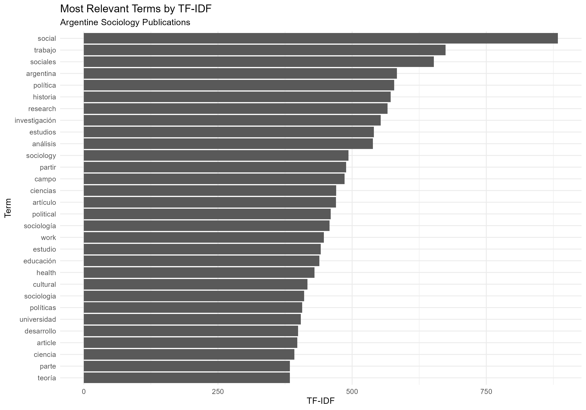
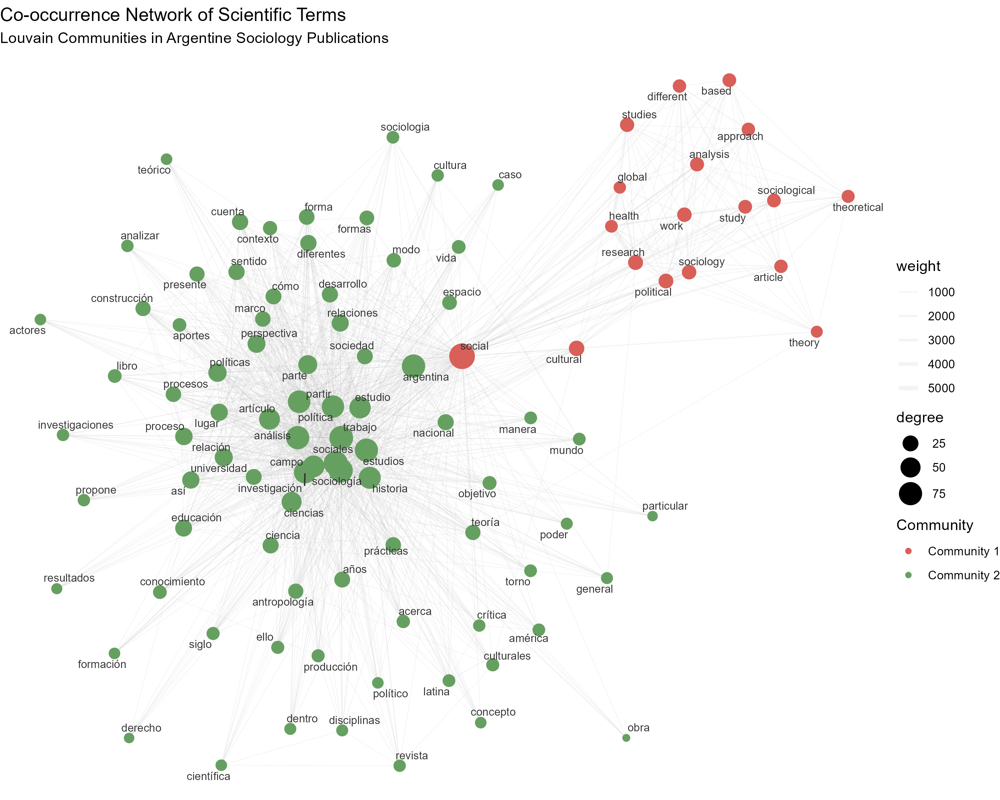
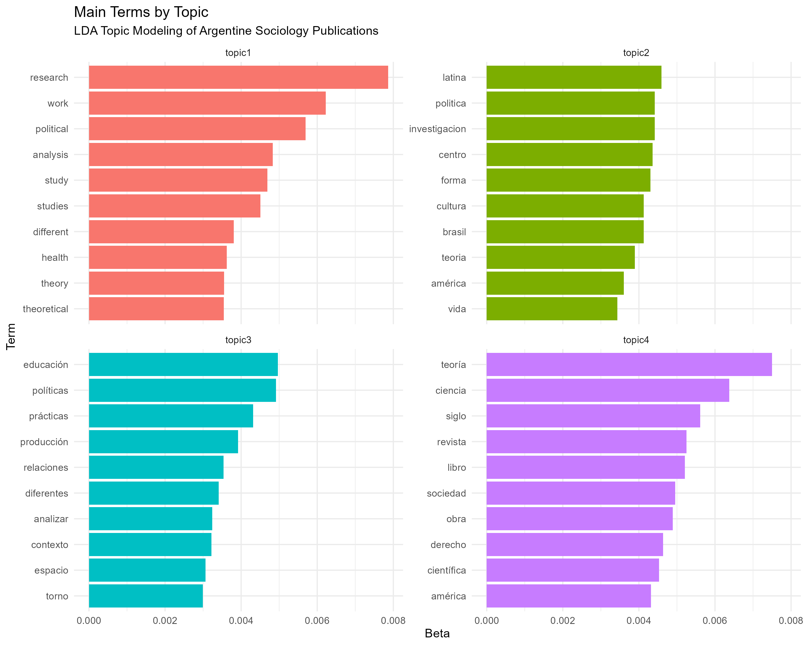
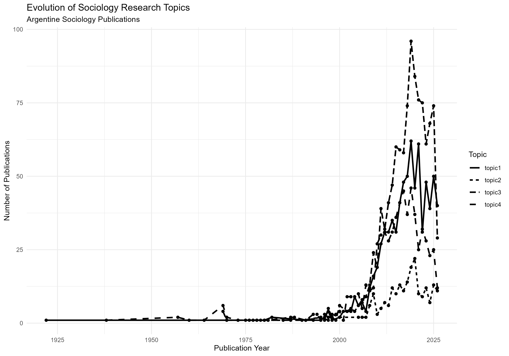

Text Mining & Topic Modeling
Análisis de producción científica argentina sobre Sociología
Este proyecto presenta un análisis de minería de textos y modelado de tópicos aplicado a publicaciones científicas sobre Sociología asociadas a instituciones de Argentina.
El objetivo es explorar la estructura temática del corpus, identificar términos relevantes, analizar relaciones entre conceptos y observar la evolución de los temas a través del tiempo.
Objetivo
Analizar un corpus de publicaciones científicas para identificar:
- términos relevantes dentro de los documentos;
- relaciones de coocurrencia entre conceptos;
- comunidades de términos dentro de la red;
- principales estructuras temáticas del corpus;
- evolución de los temas a través del tiempo.
Datos
Los datos bibliográficos fueron obtenidos directamente desde OpenAlex mediante consultas realizadas en R.
La búsqueda se realizó sobre trabajos asociados a instituciones de Argentina utilizando términos relacionados con Sociología en distintos idiomas.
La consulta recuperó 2.860 publicaciones, de las cuales 2.710 contaban con resumen (abstract) y fueron utilizadas para el análisis textual.
Nota: OpenAlex es una fuente dinámica, por lo que el número de resultados puede variar si la consulta se ejecuta nuevamente.
Metodología
El análisis se desarrolló mediante las siguientes etapas:
- Adquisición de datos desde OpenAlex.
- Selección de variables relevantes.
- Eliminación de registros sin abstract.
- Conversión del texto a minúsculas.
- Eliminación de signos de puntuación.
- Tokenización.
- Eliminación de stopwords en español, inglés, francés, alemán, italiano y portugués.
- Construcción de una matriz documento-término.
- Análisis TF-IDF.
- Construcción de una red de coocurrencia.
- Detección de comunidades mediante el algoritmo de Louvain.
- Modelado de tópicos mediante LDA.
- Análisis temporal de la distribución de los tópicos.
Técnicas utilizadas
TF-IDF
Se utilizó TF-IDF para identificar términos con mayor relevancia dentro del corpus.

Red de coocurrencia
Se construyó una red basada en la aparición conjunta de términos dentro de los documentos.
Los nodos representan términos y las conexiones representan relaciones de coocurrencia.
El tamaño de los nodos representa su grado de conexión y el peso de las aristas representa la intensidad de la relación.

Comunidades de Louvain
El algoritmo de Louvain permitió identificar tres comunidades principales de términos dentro de la red.
Estas comunidades representan agrupaciones de conceptos que presentan patrones de conexión más fuertes entre sí.
Topic Modeling con LDA
Se aplicó un modelo Latent Dirichlet Allocation (LDA) con cuatro tópicos.
Los términos principales sugieren diferentes áreas temáticas relacionadas con:
- educación, políticas y género;
- sociedad, teoría y producción de conocimiento;
- investigación, análisis y estudios científicos;
- producción académica, cultura y conocimiento.
Estas interpretaciones son exploratorias y se basan en los términos con mayor probabilidad dentro de cada tópico.

Evolución temporal
Finalmente, se analizó la distribución de los tópicos según el año de publicación para explorar cómo cambia la presencia relativa de los temas a través del tiempo.

Herramientas
- R
- Tidyverse
- Quanteda
- Quanteda Textstats
- Igraph
- Ggraph
- Tidytext
- OpenAlex / openalexR
Estructura del proyecto
```text 01-text-mining-topic-modeling/ │ ├── README.md │ ├── code/ │ └── text-mining.R │ └── images/ ├── tfidf_top_terms.png ├── cooccurrence_network.png ├── lda_topics.png └── topic_evolution.png